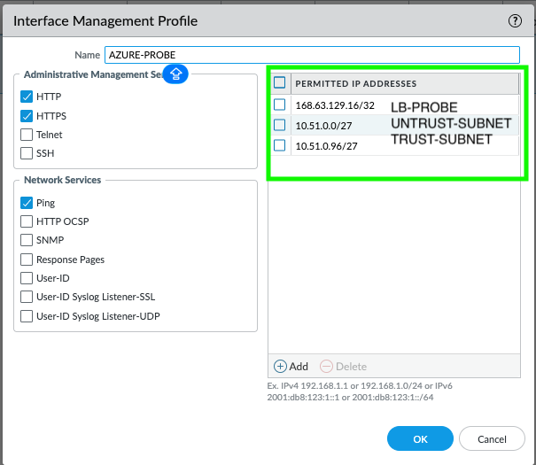
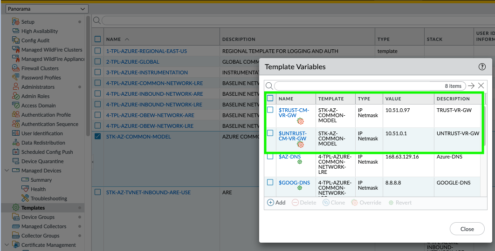
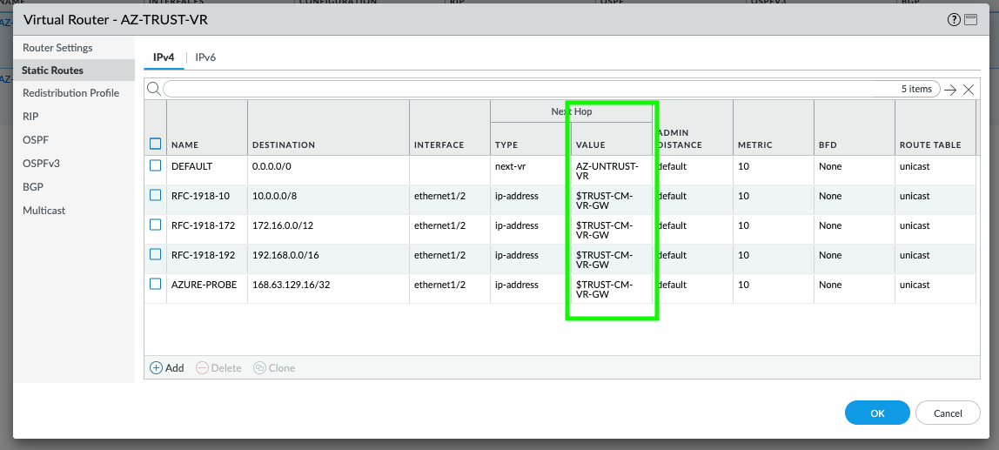
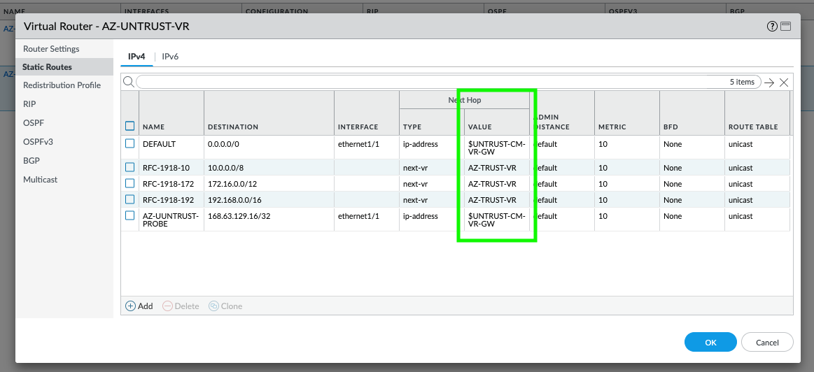
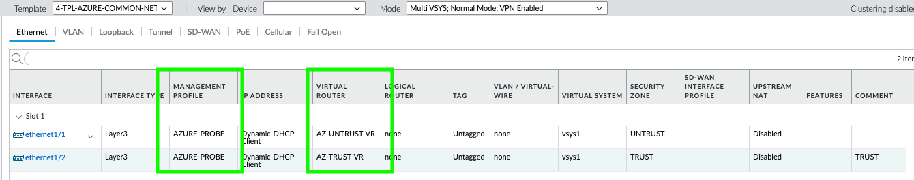

VM-Series Firewall — Internal and External Load Balancer Health Probe Resolution
This guide walks through every layer that must be correctly configured for Azure Load Balancer health probes to reach VM-Series firewalls and receive a healthy response. Azure uses the special IP address 168.63.129.16 for all health probes — if any layer blocks or fails to respond to traffic from this IP, the backend pool member will be marked unhealthy and stop receiving traffic.
Azure Load Balancer sends health probes from the virtual IP 168.63.129.16 to each backend pool member. This is not a routable internet IP — it is an Azure platform IP that exists inside every VNet. The probe arrives on the NIC associated with the backend pool (trust NIC for internal LB, untrust NIC for external LB).
The internal (trust) LB probes the trust NIC and the external (untrust) LB probes the untrust NIC. Each requires its own management profile, security policy, routes, and NSG rules. Fixing one does not fix the other.
168.63.129.16 to the trust/untrust subnet on the probe port?168.63.129.16/32 pointing to the correct interface gateway?168.63.129.16?The health probe hits the firewall's data-plane interface (not the management interface). PAN-OS will only respond if the interface has a management profile that permits traffic from 168.63.129.16 on the probe protocol and port. The management profile must match the LB probe protocol.
| LB Type | Interface | Required Management Profile Setting |
|---|---|---|
| Internal LB (trust) | ethernet1/2 (trust) | Enable HTTP (port 80) or HTTPS (port 443) — must match LB probe protocol and permit traffic from 168.63.129.16 |
| External LB (untrust) | ethernet1/1 (untrust) | Enable HTTP (port 80) or HTTPS (port 443) — must match LB probe protocol and permit traffic from 168.63.129.16 |
# Check which management profile is attached to the interface show interface ethernet1/1 # untrust show interface ethernet1/2 # trust # View management profile settings show network interface-management-profile
AZURE-PROBE-HTTP)Your management profile should look like this:

If using HTTPS probes, the probe path must be /unauth/php/health.php (the PAN-OS unauthenticated health endpoint). An HTTP probe on port 80 does not require a path — PAN-OS responds to any HTTP request on port 80 if the management profile allows it. Most deployments use HTTP on port 80 for simplicity.
Even with the management profile set, PAN-OS will drop the probe if no security policy permits it. You need an explicit allow rule for the Azure health probe IP.
| Field | Internal LB Rule | External LB Rule |
|---|---|---|
| Name | AZURE-PROBE-TRUST | AZURE-PROBE-UNTRUST |
| Source Zone | TRUST | UNTRUST |
| Source Address | 168.63.129.16 (use address object H-168.63.129.16) | 168.63.129.16 |
| Destination Zone | TRUST | UNTRUST |
| Destination Address | Trust subnet (e.g., 10.51.1.0/24) — firewalls may be assigned any IP in the subnet | Untrust subnet (e.g., 10.51.0.0/24) — firewalls may be assigned any IP in the subnet |
| Application | any | any |
| Service | service-http (or custom port) | service-http |
| Action | Allow | Allow |
The health probe enters and exits the same zone (trust→trust or untrust→untrust). This is an intrazone flow. If your default intrazone action is set to deny, you must have an explicit allow rule. Most deployments have intrazone allow by default, but verify: show running security-policy and check the intrazone-default action.
# Check if the probe traffic matches a policy test security-policy-match source 168.63.129.16 destination <TRUST-IP> protocol 6 destination-port 80 # Check running policy show running security-policy | match AZURE-PROBE
The firewall must know how to route response traffic back to 168.63.129.16. This IP is reachable via the subnet gateway of the interface that receives the probe. If the route is missing, the firewall drops the response.
If trust and untrust are in the same virtual router, a single default route (0.0.0.0/0) typically covers it. But verify that the route's next hop sends traffic out the correct interface.
In the Common Model, trust and untrust are in separate virtual routers. Each VR needs its own route to 168.63.129.16:
| Virtual Router | Destination | Next Hop | Interface |
|---|---|---|---|
| UNTRUST-VR (or CM-VR) | 168.63.129.16/32 | Untrust subnet gateway IP | ethernet1/1 |
| TRUST-VR (or CM-VR) | 168.63.129.16/32 | Trust subnet gateway IP | ethernet1/2 |
The gateway IP is the first usable address in the subnet. For example, if the trust subnet is 10.51.1.0/24, the gateway is 10.51.1.1. These are often set via template variables (e.g., $TRUST-CM-VR-GW, $UNTRUST-CM-VR-GW) on the template stack. If the variable is empty or wrong, the route has no valid next hop and the probe response is dropped.
# Check routing table for 168.63.129.16 show routing route destination 168.63.129.16 # If using dual VRs, check each one show routing route virtual-router UNTRUST-VR destination 168.63.129.16 show routing route virtual-router TRUST-VR destination 168.63.129.16 # Verify template variable values (on Panorama) show template-variable name TRUST-CM-VR-GW show template-variable name UNTRUST-CM-VR-GW
Template variables on the stack — verify gateway IPs match your Azure subnets:

AZ-TRUST-VR static routes — note the AZURE-PROBE route to 168.63.129.16/32 via $TRUST-CM-VR-GW:

AZ-UNTRUST-VR static routes — note the AZ-UUNTRUST-PROBE route to 168.63.129.16/32 via $UNTRUST-CM-VR-GW:

| Check | What to look for |
|---|---|
| Interface is up | show interface ethernet1/1 and ethernet1/2 — state should be up |
| Correct IP assigned | Interface IP must match the Azure NIC private IP. If DHCP, verify it pulled the expected address |
| Correct zone assigned | Trust interface in TRUST zone, untrust in UNTRUST zone |
| Correct VR assigned | Each interface assigned to the correct virtual router |
Verify interfaces show the correct management profile, virtual router, and zone assignments:

| Setting | Recommended Value | Notes |
|---|---|---|
| Protocol | TCP or HTTP | HTTP on port 80 is simplest. If HTTPS, set path to /unauth/php/health.php |
| Port | 80 | Must match the management profile protocol/port on the firewall |
| Path (HTTP/HTTPS only) | / (HTTP) or /unauth/php/health.php (HTTPS) | For HTTP probes, any path works. For HTTPS, use the PAN-OS health endpoint |
| Interval | 5 seconds | How often Azure sends a probe |
| Unhealthy threshold | 2 | Number of consecutive failures before marking unhealthy |
If the LB probe is set to port 80 (HTTP), the interface management profile must enable HTTP. If the probe is on port 443, enable HTTPS. A mismatch means the firewall gets the probe but does not respond.
For VM-Series (network virtual appliance) deployments, the LB rules have two critical settings that are frequently misconfigured:
| Setting | Required Value | Why |
|---|---|---|
| HA Ports | Enabled | Forwards ALL protocols and ports to the firewall, not just specific ones. Without this, only traffic matching the rule's port/protocol reaches the firewall. Required for NVA deployments. |
| Floating IP (Direct Server Return) | Enabled | Preserves the original destination IP through the load balancer. Without this, the destination is rewritten to the backend NIC IP, breaking firewall routing and NAT logic. |
If HA Ports is disabled, the LB rule only forwards traffic on the specific port/protocol configured in the rule. Health probes may still work (they use a dedicated probe mechanism), but actual data traffic will not reach the firewall for inspection. Always enable HA Ports for VM-Series deployments.
| LB Type | Backend Pool Should Reference | Common Mistake |
|---|---|---|
| Internal LB | Trust NIC (ethernet1/2) of each VM-Series | Using the management NIC or untrust NIC |
| External LB | Untrust NIC (ethernet1/1) of each VM-Series | Using the management NIC or trust NIC |
If the backend pool references the wrong NIC, the probe arrives at the wrong interface and either hits no management profile or the wrong zone's security policy.
| LB Type | Frontend IP | Notes |
|---|---|---|
| Internal LB | Private IP in the trust subnet (e.g., 10.51.1.100) | This IP is the next hop in spoke UDRs. Must be in the same subnet as the FW trust NICs. |
| External LB | Public IP address | DNAT targets on the firewall must reference this public IP as the destination. |
NSGs must allow the health probe traffic from 168.63.129.16. Azure has a built-in AzureLoadBalancer service tag for this, but if you have custom deny rules, they may override it.
| NSG Location | Required Rule |
|---|---|
| Trust subnet NSG | Allow inbound TCP 80 (or 443) from 168.63.129.16/32 (or service tag AzureLoadBalancer) |
| Untrust subnet NSG | Allow inbound TCP 80 (or 443) from 168.63.129.16/32 (or service tag AzureLoadBalancer) |
168.63.129.16, destination port 80 (or 443), action AllowDeny, check for custom NSG rules with lower priority numbers that override the default AllowAzureLoadBalancerInBound ruleAzure's default NSG rules include AllowAzureLoadBalancerInBound at priority 65001, which allows all traffic from the AzureLoadBalancer service tag. This rule is only overridden if you create a custom deny rule at a lower priority number. If you are using custom NSGs, verify this rule is not being shadowed.
Azure drops all forwarded traffic (traffic where the destination IP doesn't match the NIC's IP) unless IP forwarding is enabled on the NIC. This must be enabled on both the trust and untrust NICs.
EnabledIP forwarding does not directly affect health probes (probes target the NIC's own IP). However, if IP forwarding is disabled, data traffic won't flow even when probes pass. Always verify it's enabled as part of the troubleshooting process.
If the deployment was done via Terraform (SWFW modules), these are the variables that directly impact health probe success:
| Variable / Setting | Where | What to Check |
|---|---|---|
enable_ip_forwarding = true | VM-Series NIC config | Must be true on trust and untrust NICs |
health_check_port | LB module config | Must match the management profile protocol (usually 80) |
ha_ports_rule | LB rule config | Must be true for NVA deployments |
floating_ip | LB rule config | Must be true |
| NSG ingress rules | Security group config | Must include allow for 168.63.129.16 or AzureLoadBalancer tag |
| Trust/untrust gateway variables | Panorama template stack variables | $TRUST-CM-VR-GW, $UNTRUST-CM-VR-GW must match Azure subnet gateway (x.x.x.1) |
Run these on the VM-Series firewall to diagnose health probe issues:
# Packet capture on the trust interface for health probe traffic debug dataplane packet-diag set filter match source 168.63.129.16 debug dataplane packet-diag set filter on # Wait a few seconds for probes to arrive debug dataplane packet-diag show setting # Check session table for probe sessions show session all filter source 168.63.129.16 # Check traffic log for probe entries show log traffic source eq 168.63.129.16
# Interface status show interface all # Check management profiles show network interface-management-profile # Routing lookup for probe response show routing fib virtual-router <VR-NAME> | match 168.63.129.16 test routing fib-lookup virtual-router <VR-NAME> ip 168.63.129.16 # Show all static routes show routing route type static
# Test policy match for trust-side probe (use the firewall's actual trust IP) test security-policy-match source 168.63.129.16 destination <FW-TRUST-IP> \ protocol 6 destination-port 80 from TRUST to TRUST # Test policy match for untrust-side probe (use the firewall's actual untrust IP) test security-policy-match source 168.63.129.16 destination <FW-UNTRUST-IP> \ protocol 6 destination-port 80 from UNTRUST to UNTRUST # NOTE: The security policy destination should use the trust/untrust SUBNET # (not a single IP), since firewalls may be assigned any IP in the subnet. # Show the running security policy show running security-policy
# Check global counters for drops show counter global filter severity drop # Check flow drops specifically show counter global filter category flow | match drop # Look for "no-route" or "policy-deny" drops show counter global filter delta yes | match "no-route\|policy-deny\|icmp-unreachable"
Check show system info — if uptime is less than 10 minutes and the firewall just deployed, wait for bootstrap to complete. During bootstrap, the dataplane is not ready and cannot respond to probes.
Check show session all filter source 168.63.129.16. If no sessions, the probe is blocked before reaching PAN-OS — check NSGs and backend pool NIC assignment. If sessions exist but show DISCARD, check security policy.
If sessions show but the LB still reports unhealthy, the firewall is receiving the probe but not responding. Verify the management profile on the probed interface enables the correct protocol (HTTP/HTTPS) and port (80/443).
Run test routing fib-lookup virtual-router <VR> ip 168.63.129.16. If this returns no route or routes via the wrong interface, add a static route for 168.63.129.16/32 via the correct subnet gateway.
Even if health probes pass, traffic won't flow without HA Ports and Floating IP. Verify both are enabled on every LB rule.